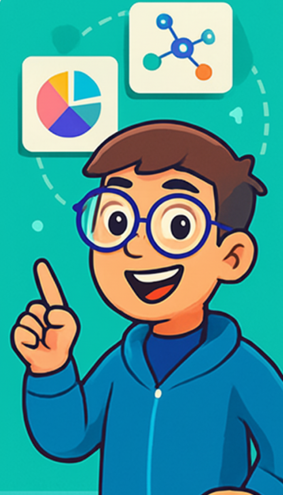
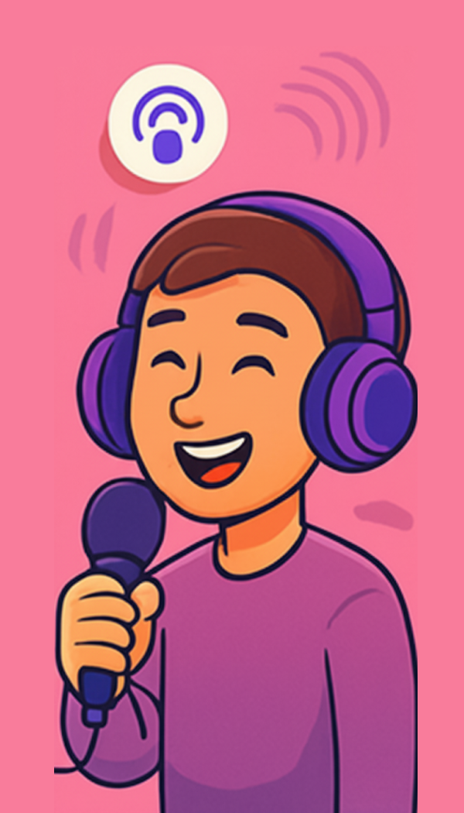
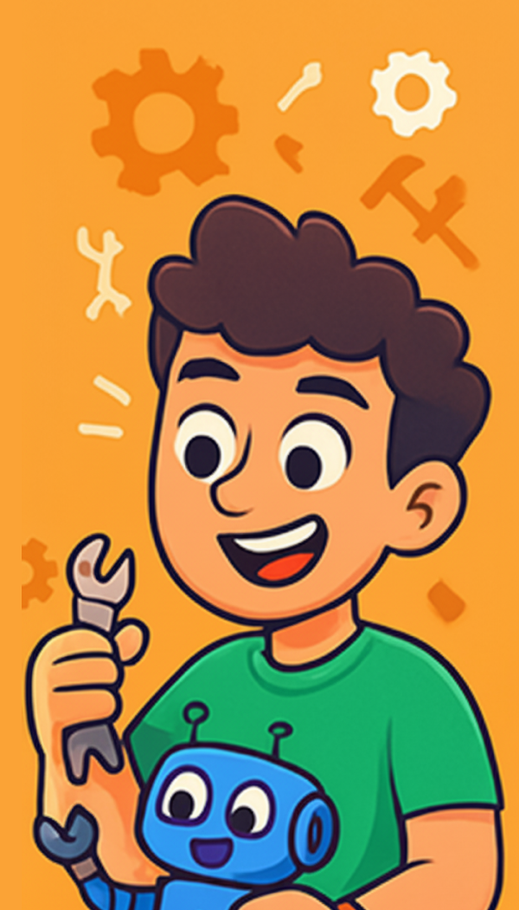
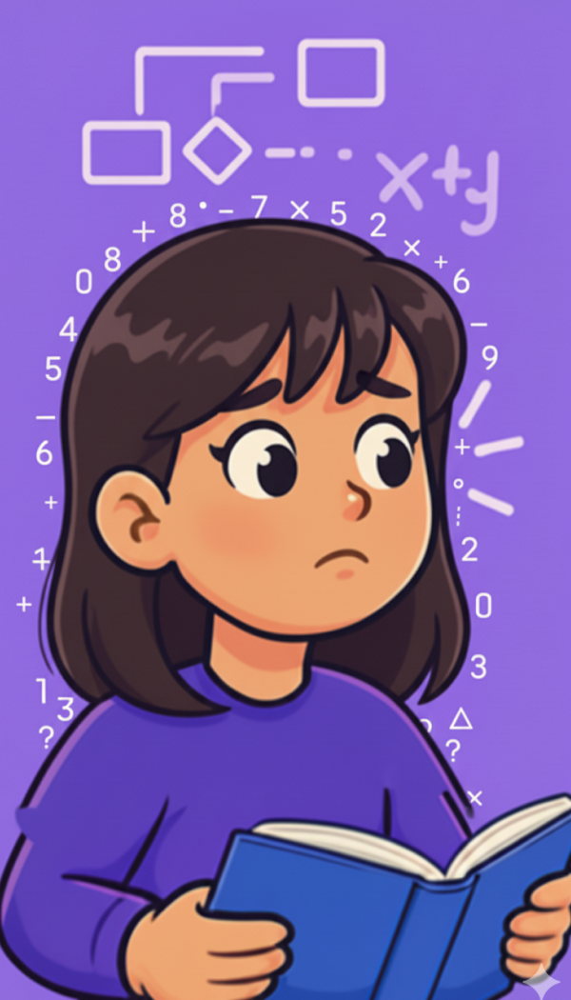
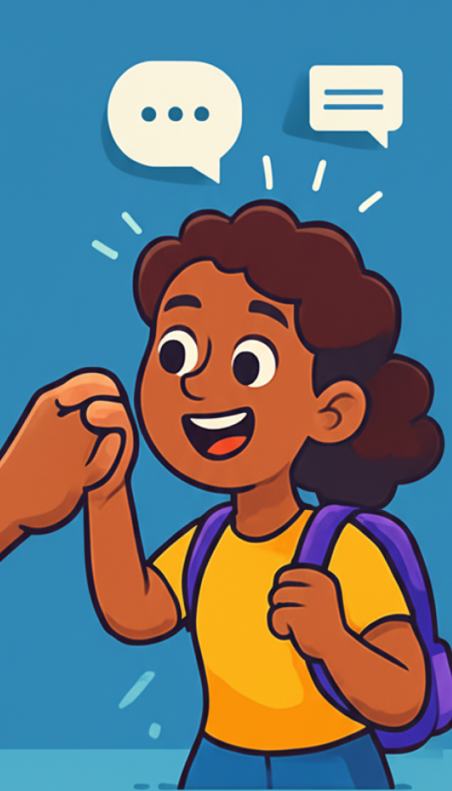

Contexto
Lumi nació como un proyecto académico de 4 meses en el que exploramos cómo las tecnologías disruptivas —específicamente la inteligencia artificial— podían transformar la experiencia educativa. A lo largo del curso, trabajamos con distintas herramientas de IA mientras aplicábamos metodologías de Design Thinking.
El proyecto surgió de problemáticas reales compartidos por dos compañeras del equipo que trabajan en el área de innovación educativa de colegios reconocidos en Perú. Identificamos que las plataformas de e-learning actuales no personalizan realmente la experiencia de aprendizaje, sino que entregan contenido genérico que no considera el estilo cognitivo, el momento vital ni las motivaciones de cada usuario.
Lumi fue diseñada para poner al ser humano en el centro del proceso educativo, creando rutas de aprendizaje adaptativas, gamificadas y emocionalmente significativas.
El Desafío
¿Cómo diseñar una plataforma de aprendizaje que realmente se adapte a cada persona, motivando el progreso constante sin perder de vista el propósito y la emoción de aprender?
Mi Rol en el Proyecto
Como Service Designer y Project Manager del equipo de 4 personas, lideré la conceptualización estratégica de Lumi, coordinando el uso de herramientas de IA y facilitando el proceso de diseño colaborativo.
Mis responsabilidades incluyeron:
- Liderar las sesiones de Design Thinking (identificación de problemas, ideación, prototipado)
- Conceptualizar el sistema de recompensas con tokens educativos (LumiCoins)
- Coordinar la integración de herramientas de IA en el proceso (ChatGPT, Gemini, Claude, Storm, Manus, Lovable, Zapier)
- Desarrollar la identidad visual y propuesta de valor basada en los 5 estilos de aprendizaje
- Actualmente: Desarrollo frontend del home, login y dashboard de estudiantes
Enfoque y Proceso
Aplicamos un proceso de Design Thinking iterativo, enriquecido con herramientas de inteligencia artificial en cada etapa. El proyecto evolucionó durante 4 meses, agregando capas de complejidad y funcionalidad conforme explorábamos nuevas tecnologías.
1. Empatizar e Investigar
Trabajamos directamente con dos expertas en innovación educativa de colegios en Perú para identificar problemas reales:
- Deserción y desmotivación estudiantil
- Falta de personalización en plataformas LMS
- Necesidad de reconocimiento tangible del esfuerzo
- Brecha entre aprender y sentirse acompañado
Herramientas usadas: ChatGPT (análisis de insights), Excalidraw (mapeo colaborativo), Miro (brainstorming visual)
2. Definir e Idear
Definimos el problema central y generamos múltiples conceptos de solución:
- Sistema de personalización basado en 5 estilos de aprendizaje
- Gamificación con propósito: LumiCoins canjeables por valor real
- Visualización del progreso personal y celebración de logros
- Integración de IA para adaptación en tiempo real
Herramientas usadas: Gemini (generación de ideas), Claude (refinamiento conceptual), Storm (investigación de mercado)
3. Prototipar y Diseñar
Creamos la propuesta completa de Lumi, incluyendo:
- Identidad de marca (logo, paleta de colores, tono de voz)
- Los 5 estilos de aprendizaje: Visionauta, Audioexplorador, Manos a la Obra, LogiMaster, Colab Hero
- Sistema de recompensas LumiCoins con valor tangible
- Arquitectura de información y flujos de usuario
- Propuesta de valor y modelo de negocio
Herramientas usadas: Manus (documentación), Lovable (prototipado), Excalidraw (diagramas)
4. Desarrollar e Implementar
Actualmente estoy llevando Lumi a código, desarrollando:
- Homepage con identidad visual completa y los 5 estilos
- Sistema de login y onboarding personalizado
- Dashboard de estudiantes con progreso y LumiCoins
- Integración con Zapier para automatizaciones
Tecnologías: HTML, CSS, JavaScript, React (planned)
Propuesta de Valor
Lumi transforma el aprendizaje en una experiencia emocionante, personal y accesible.
Rutas Adaptadas a Ti
No más contenido genérico. Lumi identifica cómo aprendes mejor y crea rutas personalizadas según tu estilo cognitivo, intereses y ritmo. Tu camino es único.
Recompensas Reales
Los LumiCoins no son medallas virtuales: se canjean por mentorías con expertos, recursos premium, certificados verificados y becas. Tu esfuerzo tiene valor tangible.
Para Todos los Estilos
Desde estudiantes de 12 años hasta jóvenes adultos de 25+. Materias escolares, habilidades para la vida (adulting) y refuerzo académico en una sola plataforma.
IA al Servicio del Aprendiz
Desde personalización hasta analítica predictiva para anticipar abandonos, cada innovación potencia la experiencia humana sin perder la calidez del acompañamiento.
Los 5 Estilos de Aprendizaje
Lumi reconoce que no todos aprendemos igual. Por eso creamos 5 perfiles únicos que adaptan la experiencia educativa a tu forma natural de procesar información. Pasa el cursor sobre cada estilo para ver más detalles.

Visionauta
VisualVisionauta
Aprende viendo: Infografías, diagramas, videos visuales, mapas mentales y contenido gráfico que transforma ideas abstractas en imágenes claras.
- Infografías interactivas
- Mapas mentales
- Videos animados
- Códigos de colores

Audioexplorador
AuditivoAudioexplorador
Aprende escuchando: Podcasts, explicaciones narradas, debates, audiolibros y discusiones que convierten el conocimiento en conversación.
- Podcasts educativos
- Explicaciones narradas
- Debates y discusiones
- Audiolibros

Manos a la Obra
KinestésicoManos a la Obra
Aprende haciendo: Experimentos prácticos, proyectos reales, simulaciones interactivas y talleres donde la teoría cobra vida.
- Experimentos prácticos
- Proyectos reales
- Simulaciones
- Talleres interactivos

LogiMaster
LógicoLogiMaster
Aprende razonando: Problemas lógicos, análisis estructurado, pensamiento crítico y desafíos que conectan causa y efecto.
- Problemas lógicos
- Análisis estructurado
- Pensamiento crítico
- Causa y efecto

Colab Hero
ColaborativoColab Hero
Aprende colaborando: Trabajo en equipo, discusiones grupales, proyectos sociales y construcción colectiva del conocimiento.
- Trabajo en equipo
- Discusiones grupales
- Proyectos sociales
- Construcción colectiva
Sistema de LumiCoins
Cada logro en Lumi te acerca a recompensas reales.
Los LumiCoins son la moneda educativa de la plataforma, pero a diferencia de otros sistemas de gamificación, tienen valor tangible. No son puntos vacíos ni medallas decorativas: son un reconocimiento real de tu esfuerzo y progreso.
Gana
Completa módulos, alcanza metas, mantén tu racha de aprendizaje y participa activamente.
Acumula
Cada objetivo cumplido suma LumiCoins a tu balance. Visualiza tu progreso y celebra cada logro.
Canjea
Usa tus monedas para acceder a valor real:
¿Qué puedes canjear con tus LumiCoins?
- Mentorías con expertos en tu área de interés
- Recursos educativos premium (libros, cursos, herramientas)
- Certificados verificados que validan tu aprendizaje
- Descuentos en programas especializados
- Becas parciales para formación externa
Tu esfuerzo importa. Y Lumi lo recompensa con oportunidades reales de crecimiento.
Diferenciadores Clave
- 5 Estilos de Aprendizaje: Sistema único de personalización que adapta contenido según cómo procesas información (visual, auditivo, kinestésico, lógico, colaborativo)
- LumiCoins con valor real: Sistema de recompensas que se canjea por mentorías, recursos premium, certificados y becas
- Rutas dinámicas: Experiencias que se adaptan continuamente según avance, perfil y feedback del usuario
- Adulting + Academia: Combina materias tradicionales con habilidades para la vida real (impuestos, finanzas personales, vida profesional)
- Tecnología + Humanidad: Combina IA avanzada con acompañamiento humano cercano y empático
- Accesibilidad total: Diseñada para múltiples dispositivos y perfiles, desde nativos digitales hasta personas con baja afinidad tecnológica
Resultados y Entregables
Entregables del proyecto:
- Documento estratégico completo (propuesta de valor, público objetivo, modelo de negocio)
- Sistema de personalización basado en 5 estilos de aprendizaje
- Identidad visual completa (logo, paleta de colores, tipografía, iconografía)
- Sistema de recompensas LumiCoins con catálogo de canjes
- Arquitectura de funcionalidades y flujos de usuario
- Desarrollo frontend en progreso (home, login, dashboard)
- Validación conceptual con profesores, estudiantes y jóvenes adultos
Herramientas de IA Utilizadas
Uno de los aspectos más innovadores de este proyecto fue la integración estratégica de múltiples herramientas de inteligencia artificial en cada fase del proceso:
ChatGPT & Gemini
Análisis de insights, generación de ideas, refinamiento de conceptos
Claude
Desarrollo de contenido estratégico y documentación técnica
Storm
Investigación de mercado y análisis de tendencias educativas
Manus
Documentación colaborativa y gestión del conocimiento
Lovable
Prototipado rápido y visualización de interfaces
Zapier
Automatizaciones y flujos de trabajo inteligentes
Excalidraw
Diagramas colaborativos y mapeo de sistemas
Reflexiones
La IA no reemplaza el diseño centrado en el humano, lo potencia.
Este proyecto me enseñó que las herramientas de inteligencia artificial son amplificadores extraordinarios del proceso creativo, pero solo cuando se guían con intención estratégica y empatía profunda hacia los usuarios finales.
Lumi comenzó como un ejercicio académico, pero se transformó en una reflexión sobre cómo diseñamos experiencias educativas en el siglo XXI. Aprendí que la verdadera innovación no está en usar la tecnología más avanzada, sino en ponerla al servicio de las necesidades reales de las personas.
Crear los 5 estilos de aprendizaje y el sistema de LumiCoins me enseñó que la gamificación tiene sentido solo cuando genera valor tangible. No se trata de agregar puntos y medallas, sino de reconocer el esfuerzo real con oportunidades reales.
Liderar este proyecto también fortaleció mi capacidad para coordinar equipos multidisciplinarios, integrar herramientas disruptivas en procesos de diseño tradicionales, y mantener el foco en el valor humano sin perder de vista la viabilidad técnica.
Actualmente, llevando Lumi al código, reafirmo mi convicción: el diseño estratégico y el desarrollo no son etapas separadas, son conversaciones continuas que deben mantenerse conectadas desde el primer día.